M.Hiroi's Home Page
http://www.geocities.jp/m_hiroi/
Lightweigth Language
お気楽 Ruby/Tk 超入門
フレーム
フレームは、複数のウィジェットをひとまとめにする入れ物として使われるウィジェットです。単純なウィジェットですが、ジオメトリマネージャと組み合わせることで、複雑なウィジェットの配置にも簡単に対応することができます。
●TkFrame
フレームウィジェットは TkFrame.new() で生成します。オプションを指定する必要はほとんどありませんが、アプリケーションによっては形状や背景色を指定するといいでしょう。形状は relief オプションで指定します。flat (平坦)、raised (出っぱり)、sunken (引っ込み)、groove (溝)、ridge (土手) の 5 種類が用意されています。デフォルトは flat です。次のプログラムを実行してください。
リスト：フレームの表示
require 'tk'
for r in ['raised', 'sunken', 'flat', 'groove', 'ridge']
f = TkFrame.new(width: 60, height: 40,
relief: r, borderwidth: 4, bg: 'gray')
f.pack(padx: 5, pady: 5, side: 'left')
end
Tk.mainloop
これは 5 つの形状をすべて表示するプログラムです。borderwidth は枠の幅を指定します。たとえば、レリーフが raised の場合、枠の上辺と左辺を背景よりも明るい色で、枠の下辺と右辺を暗い色で描くことにより、フレームがウィンドウから出っ張っているように見えます。borderwidth の値を増やすと、この幅が増えるのでフレームはより出っ張って見えるようになります。実際に値を変えて試してみてください。
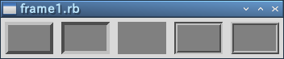 フレームの形状
●ウィジェットの配置
フレームにウィジェットを配置する方法はいままでと同じですが、もうひとつ、ジオメトリマネージャのオプション in を使う方法があります。簡単な例題として、ボタンを 3 つ横に並べて、その下にボタンを縦に 3 つ配置するプログラムを作ってみます。
これは Grid マネージャを使ってもプログラムできますが、ふたつのフレームと Pack マネージャを用いることで簡単に実現できます。横に並べるボタンをフレーム f0 に配置し、縦に並べるボタンをフレーム f1 に配置します。次のリストを見てください。
リスト：フレームにボタンを配置する
# coding: utf-8
require 'tk'
# フレームの生成
f0 = TkFrame.new
f1 = TkFrame.new
# f0 にボタンを配置する
TkButton.new(f0, text: 'button 00').pack(side: 'left')
TkButton.new(f0, text: 'button 01').pack(side: 'left')
TkButton.new(f0, text: 'button 02').pack(side: 'left')
# f1 にボタンを配置する
TkButton.new(text: 'button 10').pack(in: f1, fill: 'both')
TkButton.new(text: 'button 11').pack(in: f1, fill: 'both')
TkButton.new(text: 'button 12').pack(in: f1, fill: 'both')
# フレームの配置
f0.pack()
f1.pack(fill: 'both')
Tk.mainloop
フレーム f0 にはいままでと同じ方法でボタンを配置します。このボタンを pack するとフレーム f0 に配置されます。この段階ではフレームにボタンを詰め込んだだけなので、まだウィンドウには表示されません。メインウィンドウにフレームを配置しないとボタンは表示されないのです。
フレーム f1 には、in オプションを使ってボタンを配置します。この場合、ボタンはメインウィンドウ root から生成しますが、pack の in オプションによりフレーム f1 に配置されます。なお、in オプションは grid() でも使用することができます。
最後にフレーム f0 と f1 を pack() で配置します。これでボタンが表示されます。それから、縦に配置したボタンを引き伸ばすため、fill オプションを指定します。この場合、ボタンをフレームに配置するときと、フレームをウィンドウに配置するときの 2 か所で指定する必要があります。片方だけではボタンを引き伸ばすことはできません。ご注意くださいませ。
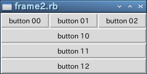 フレームを使ってボタンを配置する
●raise() と lower()
ほとんどのウィンドウシステムでは、上にある窓が下にある窓を覆い隠します。ウィジェットにも順番があり、Tk の場合はあとから作成したウィジェットが上になります。フレームウィジェットとそこに配置するウィジェットの重なり順を変更することで、ウィジェットをフレームの下に隠すことができます。つまり、ウィジェットを消去したことと同じ効果が得られるわけです。ウィジェットの重なり順はメソッド lower() と raise() で変更することができます。
widget.raise(widget1)
widget.lower(widget1)
lower() は widget の重なり順を widget1 の下に変更します。引数 widget1 を省略すると、$widget の重なり順はいちばん下になります。逆に、raise() は widget の重なり順を widget1 の上に変更します。引数 widget1 を省略すると、widget の重なり順はいちばん上になります。
ちなみに、ウィジェットを消去するメソッドに destroy() がありますが、これは本当にウィジェットを削除します。したがって、もしも同じウィジェットが必要になれば、再度ウィジェットを生成しなければいけません。lower() でウィジェットをフレームの下に隠しておけば、必要になったときに raise() で表に出すだけで済みます。
簡単な例を示しましょう。次のプログラムを見てください。
リスト：フレームの下にボタンを隠す
# coding: utf-8
require 'tk'
$buttons = []
# フレーム
f = TkFrame.new
# 隠す
def hide(n)
proc { $buttons[n].lower() }
end
# ボタン
a = TkButton.new(text: 'Show', command: proc { f.lower() })
a.pack(in: f, fill: 'x')
for x in 0..3
b = TkButton.new(text: "button #{x}", command: hide(x))
b.pack(in: f, fill: 'x')
$buttons.push(b)
end
f.pack(fill: 'x')
Tk.mainloop
5 つのボタンをフレームに配置します。これらのボタンは pack() の in オプションでフレームに配置しますが、ボタンをフレームから生成すると、フレームとボタンの重なり順を変更できなくなります。ご注意くださいませ。
button 0 - 3 を押すと、そのボタンがフレームの下に隠れます。ボタンを隠す処理は関数 hide() で生成した関数で行います。ボタンウィジェットのオブジェクトは配列 buttons に格納されているので、押したのボタンの重なり順を lower() でいちばん下にすれば、フレームの下に隠すことができます。
いちばん上のボタン Show を押すと、隠れたボタンを表に出します。このとき、ボタンを raise() で表に出してもいいのですが、フレームウィジェットの重なり順をいちばん下に変更した方が簡単です。これですべてのボタンが表示されます。
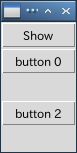 button 1 と 3 を押した状態
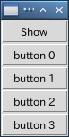 Show を押した状態
ラベルフレーム
ラベルフレームウィジェットはフレームウィジェットとラベルウィジェットを合わせたものです。見た目は枠付きのフレームで、枠の上に見出しラベルが表示されます。
●TkLabelFrame
ラベルフレームウィジェットは TkLabelFrame.new() で生成します。主なオプションを示します。
- text
見出しラベルに表示されるテキストを指定する
- relief
形状 (flat, raised, sunken, groove, ridge) を指定する
- labelanchor
見出しラベルの位置 (nw, n, ne, e, se, s, sw, w) を指定する
- labelwidget
見出しラベルのかわりにウィジェットを指定する
見出しラベルに表示するテキストは text で指定します。見出しラベルの位置は labelanchor で指定します。デフォルトは nw (左上) です。形状は relief で指定します。デフォルトは groove です。見出しラベルの部分はテキストだけではなく、オプションlablewidget でウィジェットを指定することができます。
●labelanchor と relief
それでは、簡単な使用例を示しましょう。次のリストを見てください。
リスト：ラベルフレーム (1)
require 'tk'
for r in ['nw', 'n', 'ne', 'sw', 's', 'se']
f = TkLabelFrame.new(text: 'label',
width: 80, height: 60, labelanchor: r)
f.pack(padx: 5, pady: 5, side: 'left')
end
Tk.mainloop
lableanchor を nw, n, ne, sw, s, se に変えてラベルフレームを表示ます。pack() のオプション padx と pady は、ウィジェットの周囲に設定する余白の長さを指定します。これが大きいとウィジェットの間隔が開くことになります。それでは実行結果を示します。
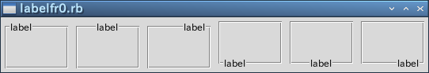 ラベルフレーム(1)
見出しラベルの位置を変更しただけですが、見た目は随分とかわりますね。
次は relief を変更してみましょう。5 つの形状をすべて表示します。
リスト：ラベルフレーム (2)
require 'tk'
for r in ['raised', 'sunken', 'flat', 'groove', 'ridge']
f = TkLabelFrame.new(text: r, width: 80, height: 60, relief: r)
f.pack(padx: 5, pady: 5, side: 'left')
end
Tk.mainloop
実行結果は次のようになります。
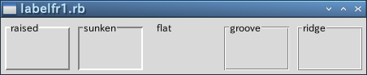 ラベルフレーム(2)
枠の幅はフレームウィジェットと同様にオプション borderwidth で変更することができます。たとえば relief が raised の場合、枠の上辺と左辺を背景よりも明るい色で、枠の下辺と右辺を暗い色で描くことにより、フレームがウィンドウから出っ張っているように見えます。borderwidth の値を増やすと、この幅が増えるのでフレームはより出っ張って見えるようになります。興味のある方は試してみてください。
●ラベルフレームにウィジェットを配置する
今度はラベルフレームにラジオボタンとチェックボタンを配置してみましょう。次のリストを見てください。
リスト：ラベルフレーム (3)
require 'tk'
v = TkVariable.new(0)
f0 = TkLabelFrame.new(text: 'Group1')
f1 = TkLabelFrame.new(text: 'Group2')
for x in [0, 1, 2]
TkRadiobutton.new(f0, text: "radiobutton #{x}", value: x, variable: v).pack
TkCheckbutton.new(f1, text: "checkbutton #{x}").pack
end
f0.pack(padx: 5, pady: 5, side: 'left')
f1.pack(padx: 5, pady: 5, side: 'left')
Tk.mainloop
ラベルフレーム f0 にはラジオボタンを 3 個、f1 にはチェックボタンを 3 個配置します。ウィジェットの配置方法はフレームウィジェットと同じです。これで、ラベルフレームにウィジェットを配置することができます。
 ラベルフレーム(3)
ラベルフレーム(3)
●labelwidget オプション
最後に、labelwidget オプションを使った例を示しましょう。見出しラベルの部分をチェックボタンにして、ラジオボタンの状態を制御することにします。ラジオボタンを使用するときはチェックボタンをオンにします。逆に、チェックボタンがオフのときはラジオボタンを使うことはできません。オプション state を disabled にするとウィジェットを無効にすることができます。プログラムは次のようになります。
リスト：ラベルフレーム (4)
# coding: utf-8
require 'tk'
# フォントの指定
TkOptionDB.add('*font', 'Takaoゴシック 14')
# 値を格納するオブジェクト
$flag = TkVariable.new(false)
v = TkVariable.new(0)
# ラジオボタンを格納
$buttons = []
# ボタンの状態を変更
def change_state
if $flag.bool then
new_state = 'normal'
else
new_state = 'disabled'
end
for b in $buttons
b.configure(state: new_state)
end
end
# チェックボタン
cb = TkCheckbutton.new(text: 'use button', variable: $flag,
command: proc { change_state })
# ラベルフレーム
f = TkLabelFrame.new(labelwidget: cb)
# ラジオボタン
for x in [0, 1, 2]
b = TkRadiobutton.new(f, text: "radiobutton #{x}",
value: x, variable: v, state: 'disabled')
b.pack()
$buttons.push(b)
end
# フレームの配置
f.pack(padx: 5, pady: 5)
Tk.mainloop
最初にチェックボタン cb を作ります。そして、ラベルフレームを生成する TkLabelFrame.new() の labelwidget に cb を指定します。cb は pack() で配置する必要はありません。ラベルフレーム f を pack() で配置するとき、ラベルフレームといっしょにチェックボタンも表示されます。
チェックボタンの状態は flag に格納します。flag の値は 0 に初期化しているので、チェックボタンはオフの状態になります。これに合わせて、ラジオボタンはすべて disabled の状態に初期化します。ボタンの状態は関数 change_state() で変更します。change_state() は flag の値によってラジオボタンの状態を変更します。あとは、TkCheckbutton.new() の command に proc { change_state } をセットすれば OK です。
実行結果は次のようになります。
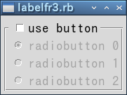 disabled 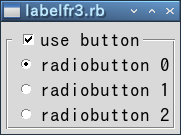 normal
このように、ラベルフレームを用いることで使いやすい GUI を構築することができます。
ペインドウィンドウ
ペインドウィンドウ (panedwindow) は、一つのウィンドウを複数の領域に分割する場合に便利なウィジェットです。分割した領域を pane (ペイン) [*1] といい、ペインとペインの間には sash (サッシュ、サッシ) と呼ばれる線が入ります。この線をマウスでドラッグすることで、ペインの大きさを変更することができます。ペインドウィンドウは、ペイン・ウィンドウとかペイン式（型）ウィンドウと呼ばれる場合もあります。
ペインドウィンドウは、いろいろなアプリケーションでよく使われている形式です。たとえば、フレームを利用できるブラウザを使えば、ウィンドウを複数の領域に分割して異なる Web ページを表示することができます。また、エディタ xyzzy や Emacs もウィンドウを分割することができます。
このように、一つの画面を複数の領域に分割して内容を表示する方式を「タイリング」[*2] といいます。これに対し、Windows では複数のウィンドウを重ねて表示することができます。この方式を「オーバーラッピング」といいます。ペインドウィンドウはアプリケーションの画面で「タイリング」を実現するウィジェットと考えることができます。
-- note --------
[*1] pane は「窓ガラス」、sash は「窓わく」という意味です。サッシの動作は窓の開閉によく似ています。
[*2] 現在のウインドウシステムはオーバーラッピング方式が主流ですが、昔はタイリング方式を採用したシステム (たとえば Lisp マシンなど) もあったようです。
●TkPanedWindow
ペインドウインドウは TkPanedWindow.new() で生成します。主なオプションを示します。
- orient: 方向
ペインを配置する方向 (horizontal : 水平, vertical : 垂直) を指定する
- sashwidth: 数値
サッシの幅を指定する
- sashrelief: 形状
サッシの形状 (flat, raised, sunken, groove, ridge) を指定する
- showhandle: boolean
真 : サッシにハンドルを付ける。偽 : サッシにハンドルを付けない。
- handlesize: 数値
ハンドルの大きさを指定する
orient のデフォルト値は horizontal です。ウィンドウは左右に分割され、サッシは縦線になります。vertical を指定するとウィンドウは上下に分割され、サッシは横線になります。サッシの幅は sashwidth で指定します。サッシの形状は sashrelief で指定します。Ruby/Tk の場合、デフォルトは flat になります。showhandle を真に設定すると、サッシに四角形のハンドルを付けることができます。ハンドルの大きさは handlesize で指定します。
●ウィジェットの配置
ペインにウィジェットを配置するにはメソッド add() を使います。ペインドウィンドウは複数のウィジェットを配置することができます。n 個のウィジェットを配置すると、ウィンドウは n 分割されます。orient が horizontal の場合、ウィジェットは左側から、vertical の場合は上から順番に配置されます。
それでは簡単な例を示しましょう。次のリストを見てください。
リスト：ペインドウィンドウ (1)
# coding: utf-8
require 'tk'
TkOptionDB.add('*font', 'Takaoゴシック 14')
# ペインドウィンドウの生成
pw = TkPanedWindow.new(sashwidth: 4).pack(expand: true, fill: 'both')
# ラベルの生成
a = TkLabel.new(pw, text: "panedwindow\ntest1", bg: 'white')
b = TkLabel.new(pw, text: "panedwindow\ntest2", bg: 'yellow')
# ペインドウィンドウに追加
pw.add(a)
pw.add(b)
Tk.mainloop
最初に TkPanedWindow.new() でペインドウィンドウ pw を作ります。pack() で pw を配置するとき、オプション expand: true, fill: 'both' を指定すると、ウィンドウのリサイズに対応することができます。次に、pw に配置するラベルを作ります。ラベルは pw の子ウィジェットになるので、TkLabel.new() の第 1 引数には pw を渡します。最後に、メソッド add() でラベルをペインドウィンドウに配置します。
それでは実行結果を示します。
(1) 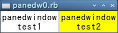 (2)
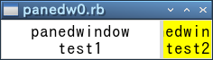 (3)
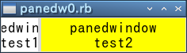
(1) が実行した直後の状態です。(2) がサッシを右へ移動した状態で、(3) がサッシを左へ移動した状態です。
ウィンドウを縦方向に分割する場合は orient に vertical を指定します。次のリストを見てください。
リスト：ペインドウィンドウ (2)
# coding: utf-8
require 'tk'
TkOptionDB.add('*font', 'Takaoゴシック 14')
# ペインドウィンドウの生成
pw = TkPanedWindow.new(orient: 'vertical', sashwidth: 4, sashrelief: 'ridge')
pw.pack(expand: true, fill: 'both')
# ラベルの生成
a = TkLabel.new(pw, text: "panedwindow\ntest1", bg: 'white')
b = TkLabel.new(pw, text: "panedwindow\ntest2", bg: 'yellow')
c = TkLabel.new(pw, text: "panedwindow\ntest3", bg: 'cyan')
# ペインドウィンドウに配置
pw.add(a)
pw.add(b)
pw.add(c)
Tk.mainloop
実行結果は次のようになります。
(1) 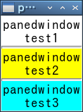
(2) 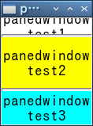
(3) 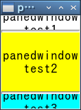
(1) が実行した直後の状態です。(2) は上のサッシュを上に移動した状態で、(3) は下のサッシュを上に移動した状態です。
●複数のウィジェットを配置する
ペインに配置できるウィジェットは一つだけです。複数のウィジェットを配置する場合は、フレームウィジェットにまとめてからペインウィンドウに配置します。簡単な例題として、複数のチェックボタンを使って、ラベルの表示をオン・オフするプログラムを作ってみましょう。次のリストを見てください。
リスト：ペインドウィンドウ (3)
# coding: utf-8
require 'tk'
TkOptionDB.add('*font', 'Takaoゴシック 14')
# グローバル変数
$la = []
$var = []
# ペインドウィンドウの生成
$pw = TkPanedWindow.new(orient: 'vertical', sashwidth: 4, sashrelief: 'ridge', showhandle: true)
$pw.pack(expand: true, fill: 'both')
# フレーム
f = TkFrame.new($pw)
$pw.add(f)
# ラベルの表示切り替え
def change_label(n)
proc {$var[n].bool ? $pw.add($la[n]) : $pw.forget($la[n]) }
end
# チェックボタン
for x in 0..3
v = TkVariable.new(true)
$var.push(v)
TkCheckbutton.new(f, text: "display label #{x}",variable: v,
command: change_label(x)).pack()
end
# ラベル
['white', 'yellow', 'cyan', 'pink'].each_with_index {|c, i|
a = TkLabel.new($pw, text: "panedwindow\ntest#{i}", bg: c)
$la.push(a)
$pw.add(a)
}
Tk.mainloop
簡単な例題ということで、チェックボタンはフレームに入れてペインウィンドウに配置します。フレームはペインウィンドウの子ウィジェットになるので TkFrame.new($pw) とします。あとはフレーム f にチェックボタンを配置します。チェックボタンは配列 $la に、チェックボタンの状態は配列 $var に格納します。配列の要素のオブジェクトは true に初期化しているので、最初はすべてオンの状態です。
関数 change_label() はチェックボタンの状態を調べる関数を返します。チェックボタンを押すとこの関数が実行されます。オンのときはペインドウィンドウにラベルを配置し、オフのときはペインドウィンドウからラベルを削除します。メソッド forget() を使うとペインウィンドウからウィジェットを削除することができます。削除したウィジェットはメソッド add() で再度ペインウィンドウに配置することができます。最後に、ラベルを 4 つ作成して、フレームとラベルをペインウィンドウに配置します。
実行結果は次のようになります。
(1) 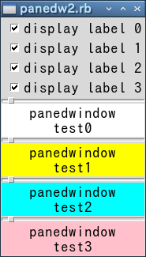
(2) 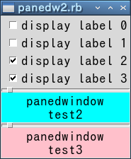
(3) 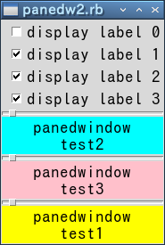
(1) が実行した直後の状態です。(2) はラベル 0 と 1 を削除した状態です。(3) は (2) の後にラベル 1 を表示した状態です。add() はウィジェットを上から順番に追加していくだけなので、削除したラベル 1 を add() で再度配置すると一番下に表示されます。
ところで、ペインドウィンドウの中にペインドウィンドウを配置することもできます。次のリストを見てください。
リスト：ペインドウィンドウ (4)
# coding: utf-8
require 'tk'
TkOptionDB.add('*font', 'Takaoゴシック 14')
# ペインドウィンドウ 1
pw1 = TkPanedWindow.new(sashrelief: 'ridge')
pw1.pack(expand: true, fill: 'both')
# ラベル 1
a = TkLabel.new(pw1, text: "panedwindow\ntest1", bg: 'yellow')
# ペインドウィンドウ 2
pw2 = TkPanedWindow.new(pw1, orient: 'vertical', sashrelief: 'ridge')
# ラベル 2, 3
b = TkLabel.new(pw2, text: "panedwindow\ntest2", bg: 'cyan')
c = TkLabel.new(pw2, text: "panedwindow\ntest3", bg: 'pink')
# ペインドウィンドウに配置
pw1.add(a)
pw1.add(pw2)
pw2.add(b)
pw2.add(c)
Tk.mainloop
最初にペインドウィンドウ 1 を作ります。左側のペインにはラベル 1 を配置し、右側のペインにはペインドウィンドウ 2 を配置します。ここで、ペインドウィンドウ 2 の orient を vertical に設定すると、アプリケーションでよく見かける 3 ペイン型のウィンドウになります。実行結果は次のようになります。
(1) 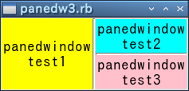
(2) 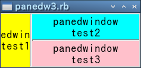
(3) 
(1) が実行した直後の状態です。(2) は縦線のサッシを左へ移動した状態です。ペインドウィンドウ 2 の領域が大きくなっていますね。このあと、横線のサッシを上に移動した状態が (3) です。このように、ペインドウィンドウを入れ子にすることで、アプリケーションでよく用いられる 3 ペイン型のウィンドウを簡単に作成することができます。
スピンボックス
スピンボックス (spinbox) はエントリー (entry) ウィジェットを拡張したウィジェットです。スピンボックスはエントリーの右側に上下のボタンが付いていて、エントリーで値を直接入力するだけではなく、上下のボタンを押すことで値を選択することができます。
●TkSpinbox
スピンボックスは TkSpinbox.new() で生成します。主なオプションを示します。
- from: n, to: m, increment: i
選択できる数値の範囲を n から m までに設定します。ボタンを押したときの増分値は i になります。
i が浮動小数点数の場合、表示も浮動小数点数になります。
- format: 書式文字列
選択する数値が浮動小数点数の場合、表示方法を書式文字列で指定します。
書式は書式文字列の変換指示子 %f と同じです。
- value: 配列
選択する項目を配列で設定します。
- state: 状態
スピンボックスの状態 (normal, readonly, disabled) を設定します。
数値はオプション from, to, increment で簡単に設定することができます。数値が浮動小数点数の場合、オプション format で表示方法を設定することができます。数値以外の場合はオプション value を使います。項目を配列に格納して value にセットします。state を readonly にすると、エントリーによる入力が禁止され、ボタンだけで値を選択することになります。
それでは簡単な使用例を示しましょう。次のリストを見てください。
リスト：スピンボックス
# coding: utf-8
require 'tk'
TkOptionDB.add('*font', 'Takaoゴシック 14')
v = ['apple', 'banana', 'cherry', 'grape', 'orange']
s1 = TkSpinbox.new(from: 1, to: 10, increment: 1, width: 10)
s2 = TkSpinbox.new(from: 1, to: 5, increment: 0.5, format: '%05.2f', width: 10)
s3 = TkSpinbox.new(value: v, width: 10, state: 'readonly')
for w in [s1, s2, s3]
w.pack(padx: 5, pady: 5)
end
Tk.mainloop
スピンボックスを 3 つ作ります。s1 は 1 から 10 までの数値で、increment は 1 です。s2 は 1 から 5 までの数値ですが、increment は 0.5 なので浮動小数点数で表示されます。format の指定が %05.2f なので、表示は 01.50 のようになります。s3 は apple, banana, cherry, grape, orange から選択します。state に readonly を指定したので、エントリーから入力することはできません。
それでは実行結果を示します。
(1) 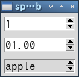 (2) 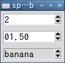 (3) 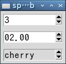
(1) は実行した直後の状態です。(2) はアップボタンを 1 回押した状態です。もう一回アップボタンを押すと (3) の状態になります。
Copyright (C) 2016 Makoto Hiroi
All rights reserved.